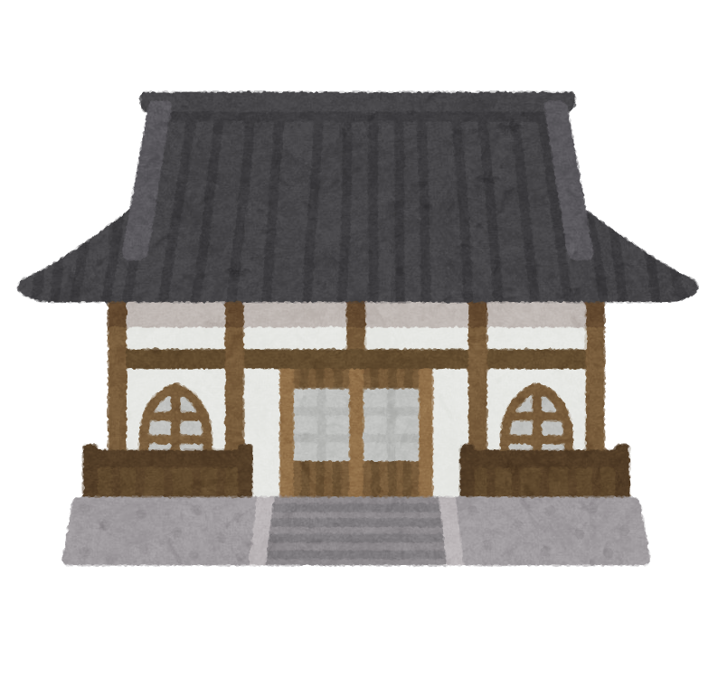
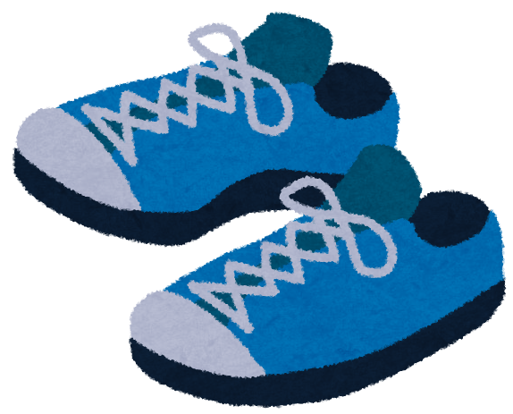

お遍路豆知識
四国霊場の巡り方について
８８箇所のお寺を「札所」といい、お寺にお参りすることを「打つ」といいます。 ８８箇所霊場のまわり方に決まりはありません。 一度にまわる必要もなければ順番通りである必要もないので、自分のペースで自由にまわりましょう。
四国霊場の移動距離
四国霊場は全道程１２００～１５００ｋｍと言われています。 歩き遍路で約４０〜５０日。車では１週間〜２週間かかります。
納経の受付時間と料金
納経受付時間：７：００〜１７：００
納経料金：３００円
（白衣２００円、掛け軸５０円）
服装など
お遍路の服装に決まりはありませんが、白衣を着ると地元の人やお遍路さん同士の交流が深まることが多いです。 また、靴選びは重要です！山よりも平地をあるくことが多いので、ごつい登山靴よりもクッション性の高いウォーキングシューズをオススメします。
巡礼の作法（リンク）